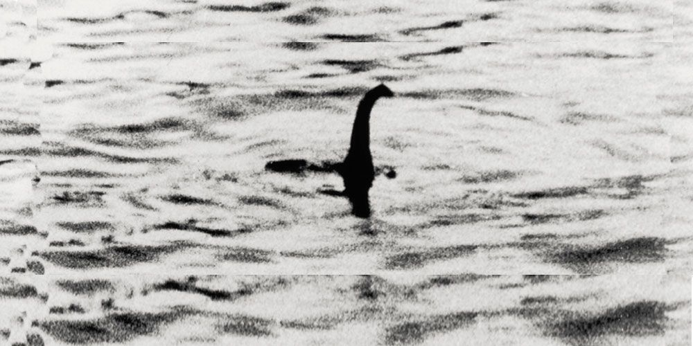

En las Tierras Altas de Escocia, el Lago Ness custodia uno de los enigmas más persistentes de la criptozoología. Con una profundidad que alcanza los 230 metros y aguas oscurecidas por la turba, este cuerpo de agua ha sido el escenario de supuestos avistamientos de una criatura colosal conocida cariñosamente como "Nessie".
El primer registro histórico se remonta al año 565 d.C., cuando San Columba, según los relatos, salvó a un hombre de un "monstruo marino" en el río Ness. Sin embargo, la fiebre moderna estalló en 1933, cuando una pareja afirmó haber visto a una criatura de cuello largo cruzar la carretera frente a su auto antes de sumergirse en el lago.
La famosa "fotografía del cirujano" de 1934 dio la vuelta al mundo, mostrando una silueta similar a la de un plesiosaurio emergiendo de las ondas. Aunque décadas después se reveló que era un fraude elaborado con un submarino de juguete, el interés no decayó. Expediciones con sonares de última tecnología han detectado masas grandes moviéndose en las profundidades que no coinciden con bancos de peces conocidos.
Hoy en día, las teorías varían desde una anguila gigante hasta una distorsión óptica causada por troncos flotantes. Sin embargo, para los habitantes de Inverness y los miles de turistas que vigilan la superficie cada año, Nessie es más que un mito: es el recordatorio de que la naturaleza aún guarda secretos que la ciencia no ha podido desentrañar por completo.